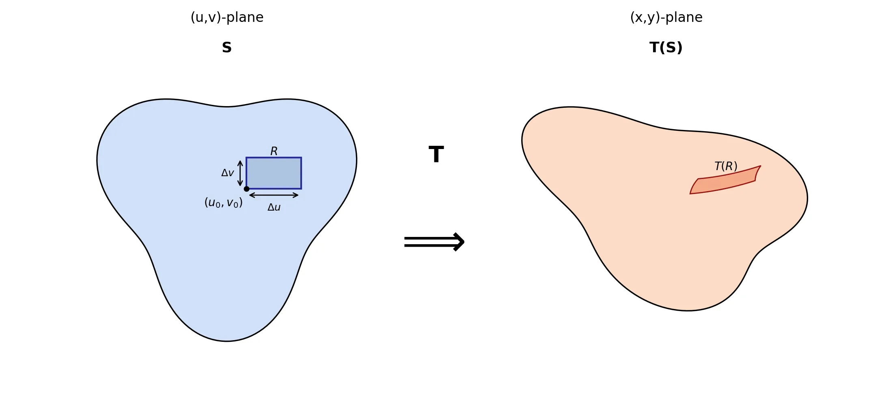

The Change of Variables Formula: A Derivation from the 2D Case to n Dimensions
1 Motivation: The geometry of area scaling
We want to compute an integral over a region D in the xy-plane that is difficult to integrate over directly:
\iint_D f(x,y) dx dy.
Suppose we have a smooth change of variables T mapping a simpler region S in the uv-plane to D:
T(u,v) = \bigl( x(u,v), y(u,v) \bigr), \quad D = T(S).
Substituting f is straightforward:
f(x,y) \quad \text{becomes} \quad f\bigl( x(u,v), y(u,v) \bigr).
But what happens to the area element dx dy? This is the heart of the matter.
1.1 How integrals are built (recalling the foundation)
Double integrals are defined as limits of Riemann sums. We:
1. Partition D into tiny rectangles R_i with area \approx \Delta x_i \Delta y_i,
2. Sample f at points (x_i,y_i) \in R_i,
3. Sum: \sum f(x_i,y_i) \cdot (\Delta x_i \Delta y_i),
4. Take the limit as rectangles shrink: \iint_D f dx dy = \lim_{\max|R_i|\to 0} \sum f(x_i,y_i) \Delta x_i \Delta y_i.
1.2 The transformation warps area
Under T, our partition of S (in uv-coordinates) maps to a partition of D:
- A tiny rectangle R = [u_0, u_0+\Delta u] \times [v_0, v_0+\Delta v] in S (area = \Delta u \Delta v),
- Maps to a curved patch T(R) in D (area \neq \Delta u \Delta v). See the figure:

Critical observation:
dx dy is not simply du dv. The transformation T distorts area.
Question: How can we compute the \text{Area}(T(R))?
To answer this, we first set up the spaces and assumptions.
2 The setting: Spaces, transformations, and assumptions
- Domain: U \subset \mathbb{R}^2 (open set) with coordinates (u,v).
- Transformation: T: U \to \mathbb{R}^2 defined by T(u,v) = (x(u,v), y(u,v)).
- Smoothness: T is C^1 (continuously differentiable), i.e., \partial x/\partial u, \partial x/\partial v, \partial y/\partial u, \partial y/\partial v exist and are continuous on U.
- Image: For any set S \subset U, T(S) = \{ T(u,v) \mid (u,v) \in S \} \subset \mathbb{R}^2.
3 Local Linearization and the Jacobian Matrix
To understand how the transformation T distorts area, we leverage its most important property “differentiability”. Because T is C^1, it can be closely approximated by a linear map near any point.
3.1 The Jacobian Matrix
For a differentiable map T(u, v) = (x(u, v), y(u, v)), the Jacobian matrix at (u_0, v_0) is the matrix of its partial derivatives:
DT(u_0, v_0) = \begin{pmatrix} \frac{\partial x}{\partial u} & \frac{\partial x}{\partial v} \\[6pt] \frac{\partial y}{\partial u} & \frac{\partial y}{\partial v} \end{pmatrix}_{(u_0,v_0)}
This matrix, DT, is the linear-algebraic representation of the derivative of T. Its columns are the vectors \mathbf{T}_u = (\partial x/\partial u, \partial y/\partial u)^\top and \mathbf{T}_v = (\partial x/\partial v, \partial y/\partial v)^\top.
3.2 The Local Linear Approximation
The differentiability of T means that near a point (u_0, v_0), the function is well-approximated by its linear part. Formally, for a small displacement (\Delta u, \Delta v), we have:
T(u_0 + \Delta u, v_0 + \Delta v) = T(u_0, v_0) + DT(u_0, v_0) \begin{pmatrix} \Delta u \\[2pt] \Delta v \end{pmatrix} + \mathbf{r}(\Delta u, \Delta v)
Here, \mathbf{r}(\Delta u, \Delta v) = (r_1, r_2) is a remainder vector that captures the error of this linear approximation.
3.3 The Key Property: Quantifying the Error
The entire theory rests on how small the remainder \mathbf{r} is. The differentiability of T guarantees that \mathbf{r} vanishes faster than the linear displacement itself. We can express this idea in two equivalent ways, which will lead to our two different proofs.
3.3.1 Viewpoint A: The “Little-o” Notation
This notation captures the intuition perfectly. We write:
|\mathbf{r}(\Delta u, \Delta v)| = o\left(\sqrt{(\Delta u)^2 + (\Delta v)^2}\right) \quad \text{as } (\Delta u, \Delta v) \to (0,0)
The notation f =o(g(x)) as x \to a means the function f is much smaller than g as x \to a. More formally:
\lim_{x \to a} \frac{f(x)}{g(x)} = 0.
In our case:
\lim_{(\Delta u, \Delta v) \to (0,0)} \frac{|\mathbf{r}(\Delta u, \Delta v)|}{\sqrt{(\Delta u)^2 + (\Delta v)^2}} = 0
3.3.2 Viewpoint B: The “Epsilon-Delta” Definition
This viewpoint makes the error bound explicit. For any chosen tolerance \varepsilon > 0, there exists a neighborhood around (u_0, v_0) such that:
|\mathbf{r}(\Delta u, \Delta v)| < \varepsilon \sqrt{(\Delta u)^2 + (\Delta v)^2}
whenever \sqrt{(\Delta u)^2 + (\Delta v)^2} is sufficiently small.
Interpretation: We can force the error to be as small as we want relative to the displacement by restricting our view to a small enough region.
These two viewpoints are logically equivalent. Viewpoint A is more concise and intuitive, while Viewpoint B is more explicit and constructive. In the following sections, we will use this local linearization to find the area of T(R).
4 Image of a small rectangle: Edge vectors
The edges of R emanating from (u_0, v_0) map to vectors in \mathbb{R}^2:
\begin{aligned} \mathbf{a} &= T(u_0 + \Delta u, v_0) - T(u_0, v_0) = \underbrace{\begin{pmatrix} x_u \\ y_u \end{pmatrix}_{(u_0,v_0)} \Delta u}_{\mathbf{T}_u \Delta u} + \mathbf{r}_1, \\ \mathbf{b} &= T(u_0, v_0 + \Delta v) - T(u_0, v_0) = \underbrace{\begin{pmatrix} x_v \\ y_v \end{pmatrix}_{(u_0,v_0)} \Delta v}_{\mathbf{T}_v \Delta v} + \mathbf{r}_2, \end{aligned}
where:
- \mathbf{T}_u = (\partial x/\partial u, \partial y/\partial u)^\top and \mathbf{T}_v = (\partial x/\partial v, \partial y/\partial v)^\top are the column vectors of DT,
- \mathbf{r}_1 = \mathbf{r}(\Delta u, 0) and \mathbf{r}_2 = \mathbf{r}(0, \Delta v) are remainder vectors satisfying:
\lim_{\Delta u \to 0} \frac{\|\mathbf{r}_1\|}{|\Delta u|} = 0, \quad \lim_{\Delta v \to 0} \frac{\|\mathbf{r}_2\|}{|\Delta v|} = 0.
Interactive Figure: Local Linearization in Action (click to open in a new tab)
Drag the handles or adjust the parameters (u_0, v_0, \Delta u, \Delta v) to see how the transformation T distorts the rectangle R.
Observe how T(R) approaches a parallelogram as \Delta u, \Delta v \to 0 — note that “approaches 0” means gets smaller, not equals 0.
See the edge vectors \mathbf{a} = T(u_0+\Delta u,v_0) - T(u_0,v_0) and \mathbf{b} = T(u_0,v_0+\Delta v) - T(u_0,v_0)
5 Area of the linear approximation
Ignoring remainders (\mathbf{r}_1 = \mathbf{r}_2 = \mathbf{0}), T(R) approximates a parallelogram spanned by \mathbf{T}_u \Delta u and \mathbf{T}_v \Delta v.
Using the fact that the determinant of a (2 \times 2) matrix is the signed area of the parallelogram formed by its column vectors (and its absolute value gives the actual area), we obtain:
\det \begin{bmatrix} \mathbf{T}_u \Delta u & \mathbf{T}_v \Delta v \end{bmatrix} = \det \left( DT(u_0,v_0) \begin{pmatrix} \Delta u & 0 \\ 0 & \Delta v \end{pmatrix} \right) = \det(DT(u_0,v_0)) \cdot \Delta u \Delta v.
Crucially, this linear approximation becomes exact in the limit because differentiability (Section 3) forces the remainder vectors \mathbf{r}_1, \mathbf{r}_2 \to \mathbf{0} faster than \Delta u, \Delta v \to 0. We now quantify this rigorously.
6 Rigorous error analysis for area approximation
The exact signed area of T(R) is the determinant of the edge vectors \mathbf{a} and \mathbf{b} (Section 4):
\det \begin{bmatrix} \mathbf{a} & \mathbf{b} \end{bmatrix} = \det \begin{bmatrix} \mathbf{T}_u \Delta u + \mathbf{r}_1 & \mathbf{T}_v \Delta v + \mathbf{r}_2 \end{bmatrix}.
By bilinearity of the determinant:
\begin{aligned} \det \begin{bmatrix} \mathbf{a} & \mathbf{b} \end{bmatrix} &= \det \begin{bmatrix} \mathbf{T}_u \Delta u & \mathbf{T}_v \Delta v \end{bmatrix} + \det \begin{bmatrix} \mathbf{r}_1 & \mathbf{T}_v \Delta v \end{bmatrix} + \det \begin{bmatrix} \mathbf{T}_u \Delta u & \mathbf{r}_2 \end{bmatrix} + \det \begin{bmatrix} \mathbf{r}_1 & \mathbf{r}_2 \end{bmatrix} \\ &= \det(DT) \cdot \Delta u \Delta v + E(\Delta u, \Delta v), \end{aligned}
where the error term E is:
E = \det \begin{bmatrix} \mathbf{r}_1 & \mathbf{T}_v \Delta v \end{bmatrix} + \det \begin{bmatrix} \mathbf{T}_u \Delta u & \mathbf{r}_2 \end{bmatrix} + \det \begin{bmatrix} \mathbf{r}_1 & \mathbf{r}_2 \end{bmatrix}.
Before we know Why E \to 0 relative to \Delta u \Delta v remember that: \det[\mathbf p\ \mathbf q]=|\mathbf p||\mathbf q|\sin\theta Hence, |\det[\mathbf p\ \mathbf q]| \le |\mathbf p||\mathbf q|
Geometrically, |\det[\mathbf p\ \mathbf q]| is exactly the area of the parallelogram spanned by (\mathbf p) and (\mathbf q), so it cannot exceed the product of their lengths.
By differentiability (Section 3):
- \mathbf{r}(\Delta u, \Delta v) = o\left(\sqrt{(\Delta u)^2 + (\Delta v)^2}\right) as (\Delta u, \Delta v) \to (0,0).
- For the edge remainders (Section 4), this implies:
\|\mathbf{r}_1\| = \|\mathbf{r}(\Delta u, 0)\| = o(|\Delta u|), \quad \|\mathbf{r}_2\| = \|\mathbf{r}(0, \Delta v)\| = o(|\Delta v|).
By C^1 continuity: The partial derivatives are bounded near (u_0,v_0). Let M > 0 satisfy:
\|\mathbf{T}_u\| \leq M, \quad \|\mathbf{T}_v\| \leq M \quad \text{(in a neighborhood of $(u_0,v_0)$)}.
Using \left| \det \begin{bmatrix} \mathbf{p} & \mathbf{q} \end{bmatrix} \right| \leq \|\mathbf{p}\| \|\mathbf{q}\|:
1. First error term:
\left| \det \begin{bmatrix} \mathbf{r}_1 & \mathbf{T}_v \Delta v \end{bmatrix} \right| \leq \|\mathbf{r}_1\| \cdot \|\mathbf{T}_v \Delta v\| \leq \underbrace{o(|\Delta u|)}_{\mathbf{r}_1} \cdot \underbrace{M |\Delta v|}_{\mathbf{T}_v \Delta v} = o(|\Delta u \Delta v|).
2. Second error term:
\left| \det \begin{bmatrix} \mathbf{T}_u \Delta u & \mathbf{r}_2 \end{bmatrix} \right| \leq \|\mathbf{T}_u \Delta u\| \cdot \|\mathbf{r}_2\| \leq \underbrace{M |\Delta u|}_{\mathbf{T}_u \Delta u} \cdot \underbrace{o(|\Delta v|)}_{\mathbf{r}_2} = o(|\Delta u \Delta v|).
3. Third error term:
\left| \det \begin{bmatrix} \mathbf{r}_1 & \mathbf{r}_2 \end{bmatrix} \right| \leq \|\mathbf{r}_1\| \|\mathbf{r}_2\| = \underbrace{o(|\Delta u|)}_{\mathbf{r}_1} \cdot \underbrace{o(|\Delta v|)}_{\mathbf{r}_2} = o(|\Delta u \Delta v|).
Summing these:
|E| \leq o(|\Delta u \Delta v|) + o(|\Delta u \Delta v|) + o(|\Delta u \Delta v|) = o(|\Delta u \Delta v|).
Thus,
\lim_{(\Delta u, \Delta v) \to (0,0)} \frac{E}{\Delta u \Delta v} = 0.
Conclusion: The signed area is
\det \begin{bmatrix} \mathbf{a} & \mathbf{b} \end{bmatrix} = \det(DT(u_0,v_0)) \cdot \Delta u \Delta v + o(\Delta u \Delta v).
For actual area, we take absolute values (noting o(\Delta u \Delta v) absorbs sign changes):
\boxed{\text{Area}(T(R)) = \left| \det(DT(u_0,v_0)) \right| \Delta u \Delta v + o(\Delta u \Delta v)}
Error bound
Using \left| \det \begin{bmatrix} \mathbf{p} & \mathbf{q} \end{bmatrix} \right| \leq \|\mathbf{p}\| \|\mathbf{q}\| (equality iff \mathbf{p} \perp \mathbf{q}):
- Let M = \max \left\{ \|\mathbf{T}_u\|, \|\mathbf{T}_v\| \right\} (finite since T is C^1).
- For any \varepsilon > 0, \exists \delta > 0 such that \|\mathbf{r}_1\| < \varepsilon |\Delta u| and \|\mathbf{r}_2\| < \varepsilon |\Delta v| whenever \max(|\Delta u|, |\Delta v|) < \delta.
Then:
\begin{aligned}
|E| &\leq |\Delta v| \cdot \|\mathbf{r}_1\| \|\mathbf{T}_v\| + |\Delta u| \cdot \|\mathbf{T}_u\| \|\mathbf{r}_2\| + \|\mathbf{r}_1\| \|\mathbf{r}_2\| \\
&< |\Delta u| |\Delta v| \left( M \varepsilon + M \varepsilon + \varepsilon^2 \right) \\
&= |\Delta u| |\Delta v| \left( 2M \varepsilon + \varepsilon^2 \right).
\end{aligned}
Thus:
\frac{|E|}{|\Delta u \Delta v|} < 2M \varepsilon + \varepsilon^2 \xrightarrow[\delta \to 0]{} 0.
Conclusion: The signed area is \det(DT) \Delta u \Delta v + o(\Delta u \Delta v). For actual area, we take absolute values:
\text{Area}(T(R)) = \left| \det(DT(u_0,v_0)) \right| \Delta u \Delta v + o(\Delta u \Delta v).
7 From local to global: The change of variables formula
Partition S \subset U into small rectangles R_{ij}. By our local analysis (Section 6), the area of T(R_{ij}) is \left| \det(DT(u_i,v_j)) \right| \Delta u \Delta v + o(\Delta u \Delta v). Summing over all rectangles and taking the limit as the partition refines:
\text{Area}(T(S)) = \lim_{\max \Delta u, \Delta v \to 0} \sum_{i,j} \text{Area}(T(R_{ij})) = \iint_S \left| \det(DT(u,v)) \right| du dv.
For a continuous function f, the same partitioning argument gives:
\boxed{ \iint_{T(S)} f(x,y) dx dy = \iint_S f(T(u,v)) \left| \det(DT(u,v)) \right| du dv }
8 Essential Conditions for Validity
The change of variables formula requires two conditions to ensure the Jacobian accurately captures local area scaling:
8.1 1. Injectivity
T must be one-to-one on S: distinct points in S map to distinct points in T(S).
- Why? Non-injective maps fold the domain, causing overcounting in integrals.
- Workaround: Partition S into regions where T is injective and apply the formula piecewise.
8.2 2. Non-Singular Jacobian
\det(DT) \neq 0 almost everywhere on S (i.e., except on sets of measure zero).
A set S \subset \mathbb{R}^n has measure zero if:
For every \varepsilon > 0 you can cover S with countably many rectangles (or balls) whose total volume is less than \varepsilon.
(Examples: isolated points, smooth curves in \mathbb{R}^2.)
- Why? Where \det(DT) = 0 on a set of positive measure, T collapses regions to lower dimensions (e.g., surfaces to curves), breaking area scaling.
- Key point: Sets of measure zero do not affect integrals, so vanishing Jacobians there are harmless.
8.3 Formula Validity
The formula
\iint_{T(S)} f(x,y) dx dy
= \iint_S f(T(u,v)) \big|\det(DT(u,v))\big| du dv
holds when:
1. T is injective on S,
2. T is C^1 (continuously differentiable), and
3. \det(DT) \neq 0 almost everywhere on S.
9 Examples
Uniform scaling: T(u,v) = (2u, v).
DT = \begin{pmatrix} 2 & 0 \\ 0 & 1 \end{pmatrix}, \quad \det(DT) = 2 \implies dx dy = |2| du dv = 2 du dv.
Interpretation: Areas double under T.Polar coordinates: T(r,\theta) = (r\cos\theta, r\sin\theta) for r > 0.
DT = \begin{pmatrix} \cos\theta & -r\sin\theta \\ \sin\theta & r\cos\theta \end{pmatrix}, \quad \det(DT) = r(\cos^2\theta + \sin^2\theta) = r.
Thus dx dy = |r| dr d\theta = r dr d\theta (since r > 0).
Interpretation: The factor r accounts for increasing “width” of angular sectors at larger radius.
10 Final summary and extension to higher dimensions
For a C^1 transformation T: (u,v) \mapsto (x,y) with almost non-singular Jacobian (\det(DT) \neq 0) on S:
\boxed{ dx dy = \left| \det \begin{pmatrix} \partial x/\partial u & \partial x/\partial v \\ \partial y/\partial u & \partial y/\partial v \end{pmatrix} \right| du dv }
This is the foundation of the change of variables formula. The absolute value of the Jacobian determinant universally quantifies how T distorts infinitesimal areas. Rigorous justification requires C^1 smoothness to control linearization errors, as shown in Section 6.
Crucially, this entire framework scales seamlessly to higher dimensions. For a C^1 transformation T: \mathbb{R}^n \to \mathbb{R}^n defined by T(u_1, \dots, u_n) = (x_1, \dots, x_n), the Jacobian matrix DT becomes an n \times n matrix of partial derivatives:
DT = \begin{pmatrix} \frac{\partial x_1}{\partial u_1} & \cdots & \frac{\partial x_1}{\partial u_n} \\ \vdots & \ddots & \vdots \\ \frac{\partial x_n}{\partial u_1} & \cdots & \frac{\partial x_n}{\partial u_n} \end{pmatrix}.
The absolute value of its determinant, |\det(DT)|, serves as the local volume scaling factor for infinitesimal n-dimensional cubes. This is because:
1. Linear approximation: Near any point, T is approximated by the linear map DT.
2. Volume scaling: The determinant \det(DT) gives the signed volume of the parallelepiped spanned by the column vectors of DT (the images of the unit coordinate vectors).
3. Error control: Differentiability ensures nonlinear errors vanish faster than the volume element du_1 \cdots du_n as the partition refines, exactly as in the \mathbb{R}^2 case (Section 6).
Consequently, the change of variables formula generalizes to:
\int_{T(S)} f(\mathbf{x}) d\mathbf{x} = \int_S f(T(\mathbf{u})) \left| \det(DT(\mathbf{u})) \right| d\mathbf{u},
where d\mathbf{x} = dx_1 \cdots dx_n and d\mathbf{u} = du_1 \cdots du_n. Whether computing volumes in \mathbb{R}^3 (where |\det(DT)| scales infinitesimal cubes), probability densities in statistics, or flux integrals in physics, the Jacobian determinant remains the universal scaling factor for volume elements under smooth coordinate transformations in any dimension.